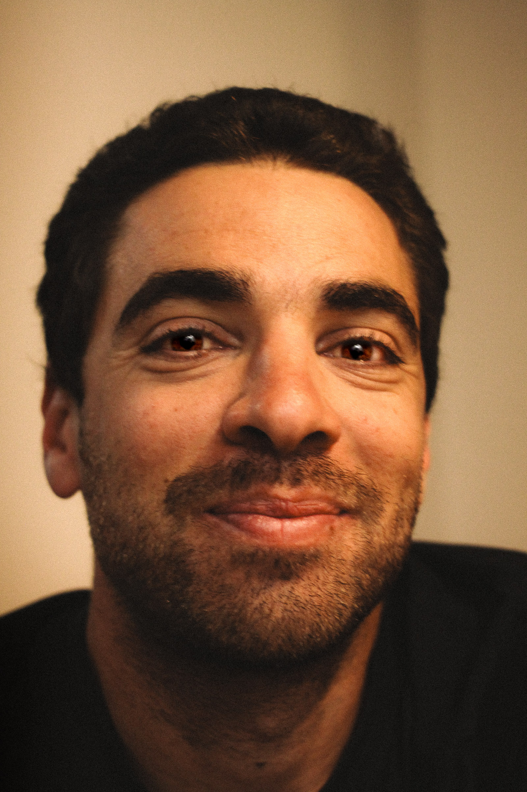
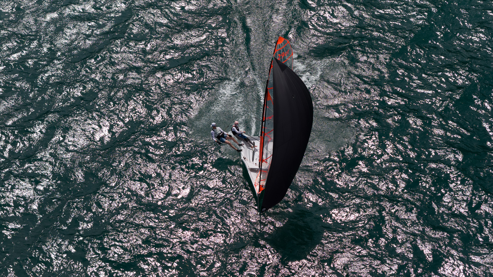
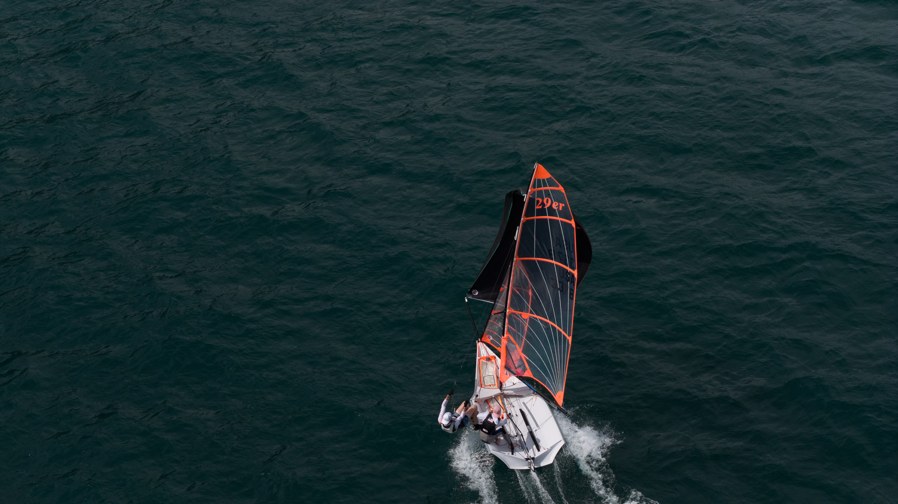
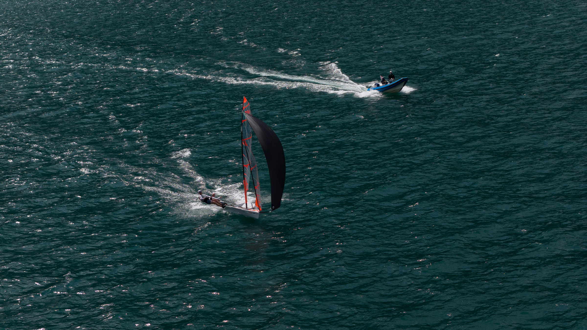
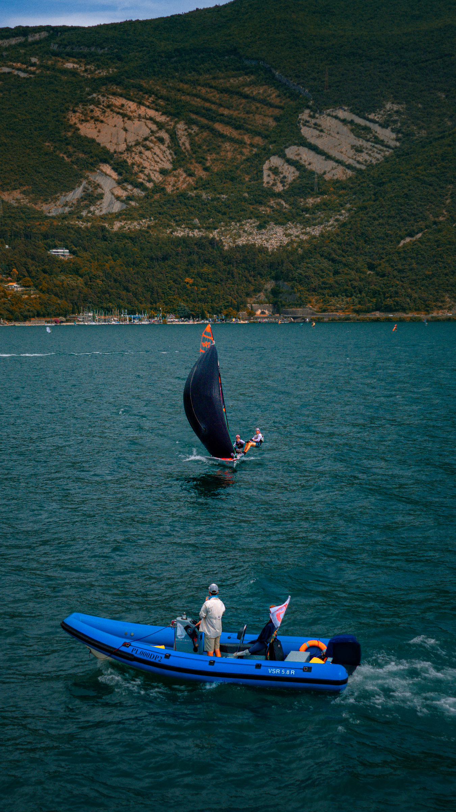

Professional Sailing Coach
I'm Federico García, a professional sailing coach and Naval Architect with over a decade of experience developing youth sailors and Olympic athletes. As a dedicated sailing coach, I specialize in 29er, 420, and Nacra 17 training programs that combine technical excellence, physical conditioning, and strategic racing intelligence.
Sailing Coaching Experience

International Sailing Coach
- 29er clinics across different global regions
- International sailing coach for youth programs

Club & Event Sailing Coach
- Yacht Club Argentino - Head Sailing Coach
- Private sailing coach for competitive sailors
- Head Coach ZSV Region 5 (Switzerland)

Olympic Sailing Coach
- Nacra 17 private coach for Olympic campaigns
- High-performance sailing coach for national teams

Youth Sailing Development Coach
- Collaboration with Swiss Sailing Team
- National youth sailing programs coach
- Youth sailing development specialist
Sailing Coaching Results & Achievements
Semana Internacional del Yachting
1st, 2nd, 3rd, 4th, 5th - Sailing Coach Achievements
29er World Championship
Top 5 – Team 5th & 13th - International Sailing Coach
420 South American Championship
1st Female, 3rd, 4th overall - Sailing Coaching Success
Nacra 17 World Cup – Oman
7th place – Olympic Campaign Coaching
Valencia 29er Worlds
11th place (Youth Worlds) - Youth Sailing Coach
Argentine Nationals
Multiple podiums – 29er & 420 Sailing Coach
Sailing Coaching Skills & Expertise
🪢 Splicing & Rigging
🧠 Emotional Intelligence Coaching
⛵ Sail Trimming & Repairs
📐 Naval Architecture for Sailing
🌪 Meteorology (World Race)
🧰 Electrical & Mechanical Repairs
🎯 Youth Sailing Training Methodology
🗺 GPS Navigation & Racing Strategy
Contact Sailing Coach Fede García
Ready to improve your sailing performance? Contact your professional sailing coach today: